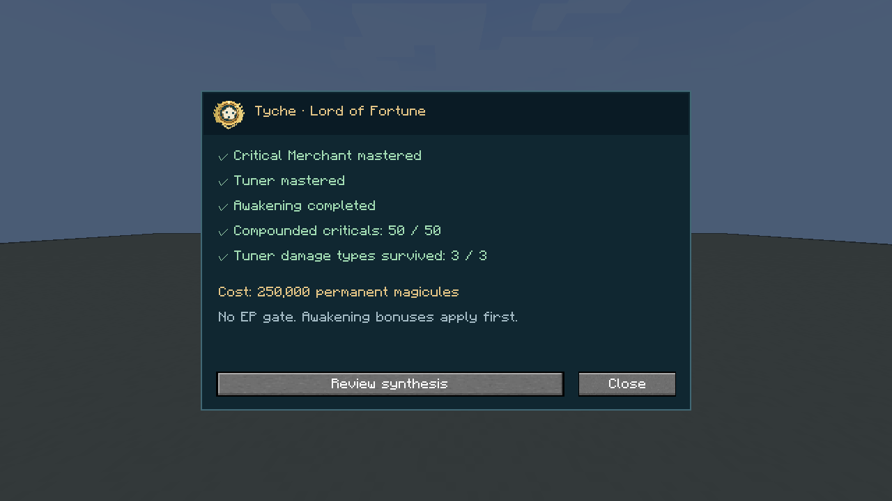
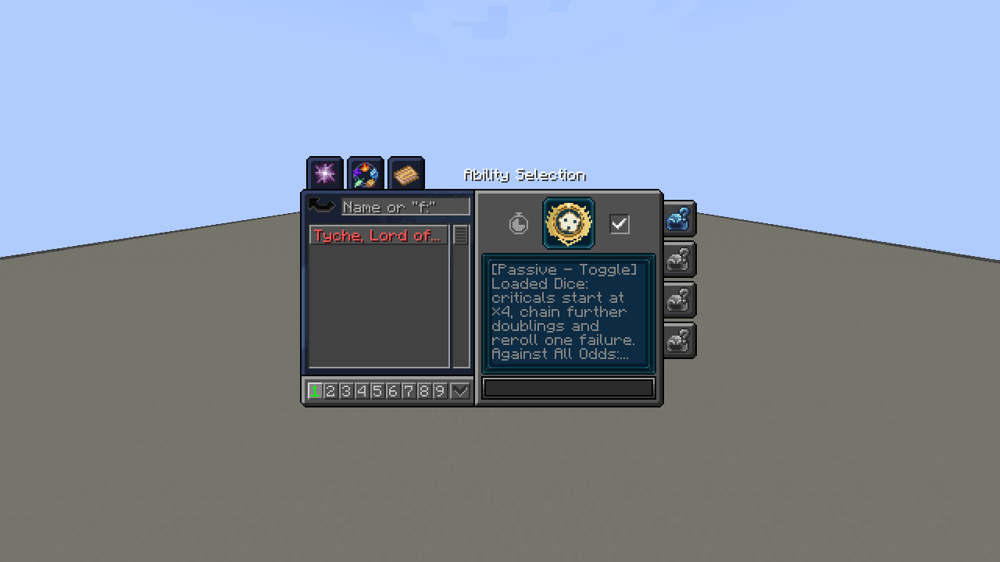
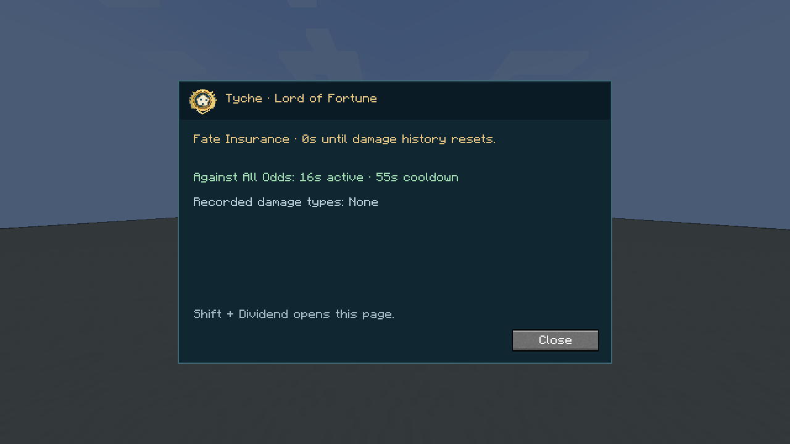
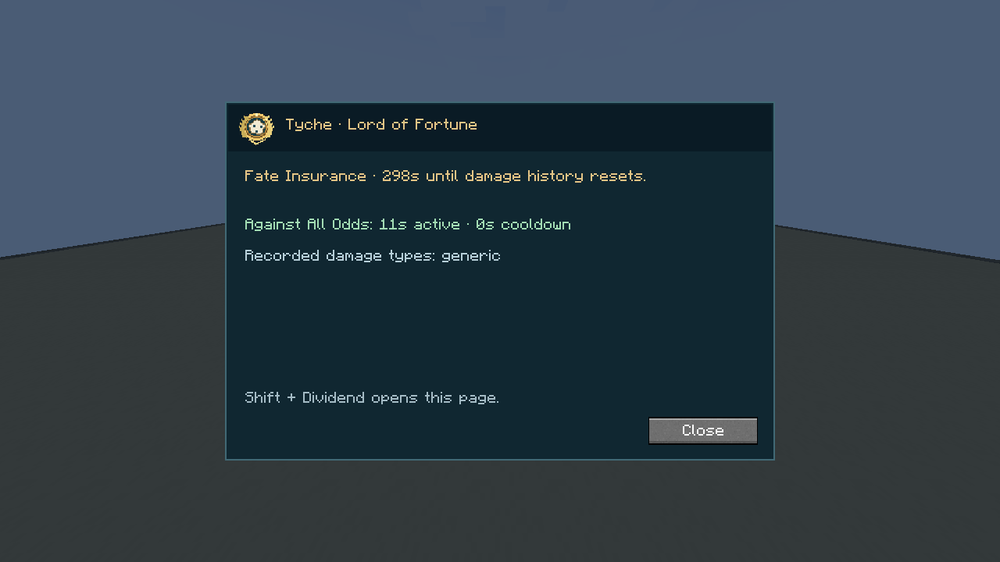

On this page

Menu screenshots were recorded before the 1.26.2 balance change; use the current values below.
Owning either component reveals Tyche in Skills → Ultimate. Open the unfinished entry, meet the requirements and confirm synthesis. Awakening bonuses apply before payment. Both parents are replaced by learned, unmastered Tyche. Existing guaranteed hits, their cooldown and Tuner’s current damage-history lockouts transfer. Affected presets point to Guaranteed Dividend.
Loaded Dice · Passive, Toggle
Criticals begin at ×2. Each successful 50% roll compounds that bonus by ×1.35, up to 100 successes. The first failed roll gets one reroll per chain; the next failure ends the chain. There is no separate payout cap.
Bonus multiplier = 2 × 1.35ⁿ, where n is the number of successes (0–100). This multiplies already-critical damage. For example, a 100-damage critical becomes 200, 270, or 364.5 with zero, one, or two successes. Loaded Dice does not itself make every attack critical. Damage retains its original type and normal defenses apply.
Against All Odds · Passive, Toggle
At 50% HP or SHP or lower, automatically gain the full buff for 20 seconds. Cooldown: 60 seconds from activation. Healing does not reduce or cancel it. The bonuses are:
| Effect | Full bonus |
|---|---|
| Attack damage | +50% |
| Melee and projectile evasion | +25 percentage points each |
| Attack speed | 1.5× mastered Tuner’s bonus; +0.6 by default |
| Swim speed | 1.5× mastered Tuner’s bonus; +3 to the native multiplier by default |
| Movement speed | 1.1× mastered Tuner’s bonus; +0.088 by default |

Speed bonuses follow the server’s Tuner settings. Each category applies once: no extra Tuner flat attack-damage or evasion layer is added. Uses the same native toggle as Loaded Dice. Switching it off cancels the active buff but retains its cooldown; remaining at low HP/SHP can trigger it again when ready. Duration and cooldown are configurable. Damage type: none directly.
Fate Insurance · Passive, True
An eligible fatal hit is prevented. Recover full HP, SHP, magicules and aura, remove harmful status effects and reset all other native skill/ability cooldowns. Capacities remain your current maximums.
The incoming damage type is recorded using Tuner’s native damage-message grouping. The first revival starts a five-minute history window. Each new type can trigger once during that window; an already recorded type cannot. Later revivals do not extend the window. When it expires, all recorded types become eligible again.

The reset preserves Fate Insurance’s own timer and history. Void, /kill, native level-three barrier-bypass attacks and Tuner’s self/owner-attack exclusions remain ineligible. Damage type: none.
Guaranteed Dividend · Active, Press
5,000 magicules · 20-second cooldown. Your next ten landed hits are guaranteed criticals. Each rolls two Loaded Dice chains and uses the higher result, including when the passive is off. Recasting refreshes to ten; fully blocked, immune or failed hits do not spend a guarantee. Melee, owned projectiles and direct spiritual damage use the shared critical pipeline.
Shift-press opens synthesis, passive timers and your current insurance history. Damage type: the original attack’s type.
Configuration: tensura-additions-tyche.toml controls synthesis cost, achievements, Dividend cost, and Against All Odds duration/cooldown.